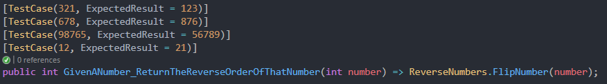
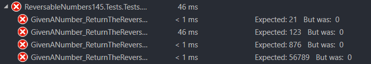

What: Solve a coding challenge using TDD
Why: Demonstrate how TDD can lead to cleaner code
How: Solve Project Euler challenge #145 using good practices of TDD
Some positive integers n have the property that the sum [ n + reverse(n) ] consists entirely of odd (decimal) digits.
For instance, 36 + 63 = 99 and 409 + 904 = 1313. We will call such numbers reversible;
so 36, 63, 409, and 904 are reversible. Leading zeroes are not allowed in either n or reverse(n).
There are 120 reversible numbers below one-thousand.
How many reversible numbers are there below one-billion (109)?
Before I even began writing code, I separated the requirements of this challenge. I came up with three different one:
Following the TDD cycle, I started off with writing a failing test. My first test looked something like this:
Now that this test is written we can see that it is failing...which is what we expected!

Great! Now that we have a failing test, we can make the test pass. Now, this blog is not about solving the problem,
but more about the process of TDD
Once I wrote some code to test we can run the tests again to see if they pass...
Ah, don't you just love seeing those green checks? That means it passed! Here is the code that made them pass.
The next steps would be to refactor the code. In my case, I went and added some edge cases to my tests and made a few comments to my code to make it easier to follow. This could also be a perfect time to optimize and make code more efficient. Then you start the cycle over by writing another failing test!
This process is simple and worth following. In my honest opinion it makes coding feel more productive and straight forward. I continued this process and eventually landed at the answer. Here are some code snippets of my journey.
And just like that you have all passing tests, and working code! For those of you who have made it this far, the correct answer to this challenge is 608720 :)